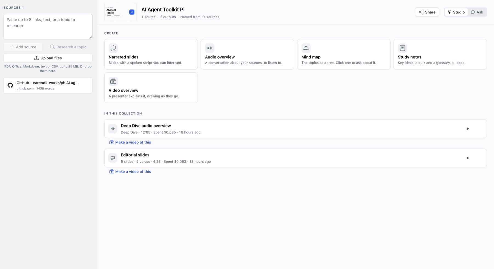
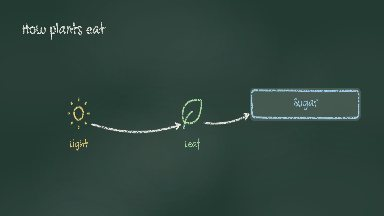
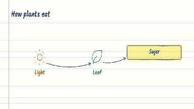
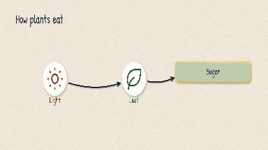
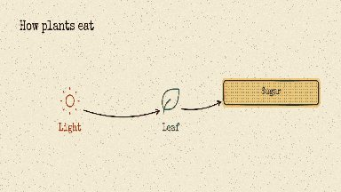
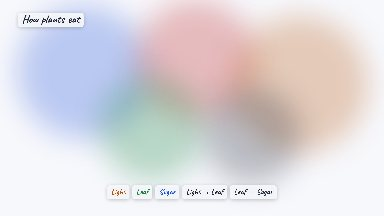

Your sources, turned into something you can learn from.
OpenNotebook is the open-source, self-hosted NotebookLM alternative. Put in PDFs, web pages, YouTube videos and recordings, and get narrated decks, video and audio overviews, mind maps and notes. Every claim links back to its source.

What it makes
Put your sources into a collection, then turn them into something to learn from.
Narrated slide decks
Stop at any point and ask a question out loud.
Video overviews
Slides or a hand-drawn whiteboard in ten looks, with chapters and captions that follow along word by word.
Audio overviews
One host or two, talking it through.
Mind maps and study notes
The shape of a topic at a glance, and notes to revise from.
Chat with citations
Ask your sources questions and keep an answer as a note. Every claim links to its passage.
Transformations
A summary, key claims, flashcards, a timeline, or an instruction of your own.
Ten looks for video overviews
Pick a look that fits the material, from a clean whiteboard to watercolor.










How it works
Collect
Add PDFs, Office files, links, YouTube videos, recordings or notes.
Make
Choose a deck, video, audio overview, mind map or notes.
Check and share
Follow any claim back to its source, then share the collection on Discover so others can read or reuse it.
Yours to run, with any model
It runs on your machine or server, and your sources stay in your own Postgres. There is no telemetry, and it is MIT licensed.
It is also an MCP server, so your own agents can read collections and ask questions with citations.
Run it
You need Docker and an AI provider. A short setup tour on first run tests your key and suggests a model for each kind of work.
git clone https://github.com/mahmoud-emad/opennotebook.git
cd opennotebook
cp deploy/.env.example deploy/.env # set POSTGRES_PASSWORD
make upThen open http://localhost/ui/. The full guide is in the README.